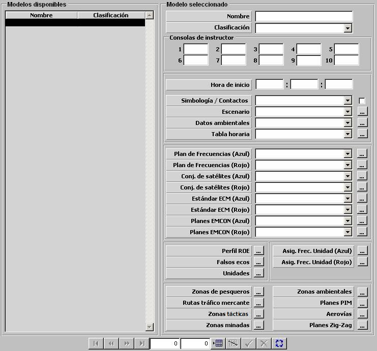

Preparación de Ejercicios

Mediante este diálogo de parametrización de Ejercicios se especifican todos los parámetros generales del Ejercicio, y se accede a los diálogos que permiten especificar los perfiles ROE, los datos iniciales de unidades participantes en el Ejercicio, los falsos ecos, las zonas y rutas incluidas en el Escenario, etc.
Cuando se crea un nuevo Ejercicio, los únicos campos que pueden ser introducidos son Nombre, Clasificación, Hora de Inicio y Simbología. Una vez que el Ejercicio en creación es validado, se pueden introducir el resto de parámetros y se puede acceder al resto de diálogos.
A continuación se describen los parámetros generales del Ejercicio y se referencian los accesos a los distintos diálogos:
Consolas de Instructor: Estos parámetros determinan los identificadores de consolas que actuarán como Consolas de Instructor en el Ejercicio. Se podrán incluir un máximo de diez consolas de instructor. El número identificador de cada consola del sistema se especifica mediante la entrada correspondiente del fichero Galeon.ini .
Hora de Inicio: Este parámetro determina la hora (HH:MM:SS) al que se simula que comienza el Ejercicio. Es tenido en cuenta para determinar a las condiciones de Visibilidad. Ver apartado Modelos Básicos - Ambientales - Tabla Horaria.
Simbología / Contactos: Este parámetro determina la simbología predeterminada empleada para representación de unidades y contactos en la Presentación Táctica entre STANAG-4420 o NTDS. Junto a este campo se puede seleccionar la opción de “Mostrar Simbología Inicial de Contactos” (ver Modelística – Sensores).
Escenario: Escenario del Ejercicio. Ver apartado Edición de Escenarios.
Datos Ambientales: Este parámetro determina las condiciones ambientales por defecto del Ejercicio. Es decir, siempre que no se encuentre dentro de una Zona Ambiental, las condiciones ambientales consideradas serán las aquí especificadas. Ver apartado Condiciones Ambientales.
Tabla Horaria: Tabla horaria tenida en cuenta en el Ejercicio. Ver apartado Modelos Básicos - Ambientales - Tabla Horaria.
Plan de Frecuencias (Azul y Rojo): Planes de frecuencias considerados para los bandos Azul y Rojo. Ver apartado Comunicaciones - Planes de Frecuencias.
Conjunto de Satélites (Azul y Rojo): Satélites disponibles para los bandos Azul y Rojo. Ver apartado Modelos Básicos - Comunicaciones - Conjunto de Satélites.
Estándar ECM (Azul y Rojo): Contramedidas recomendadas por defecto para los bandos Azul y Rojo. Ver apartado Modelos Básicos - Contramedidas - ECM Standard.
Planes EMCOM (Azul y Rojo): Planes EMCOM considerados para los bandos Azul y Rojo. Ver apartado Modelos Básicos - Comunicaciones - Planes EMCOM.
Perfiles ROE: Lista de ROEs disponibles en el Ejercicio. Ver apartado Perfiles ROE.
Falsos Ecos: Falsos Ecos incluidos en el Ejercicio. Ver apartado Falsos Ecos.
Unidades: Unidades incluidas en el Ejercicio. Ver apartado Unidades.
Asignación de Frecuencias por Unidad (Azul y Rojo): Asignación de las distintas redes asignadas en los Planes de Frecuencias del Ejercicio a las unidades incluidas en el Ejercicio. Ver apartado Asignación de Frecuencias.
Zonas de Pesqueros: Zonas de Esfuerzo Pesquero incluidas en el Ejercicio. Ver apartado Zonas de Pesqueros.
Rutas de Tráfico Mercante: Rutas de Tráfico Mercante incluidas en el Ejercicio. Ver apartado Rutas de Tráfico Mercante.
Zonas Tácticas: Zonas de Interferencia incluidas en el Ejercicio. Ver apartado Zonas de Interferencias.
Zonas Minadas: Zonas Minadas incluidas en el Ejercicio. Ver apartado Zonas Minadas.
Zonas Ambientales: Zonas Ambientales incluidas en el Ejercicio. Ver apartado Zonas Ambientales.
Planes PIM: Planes PIM incluidos en el Ejercicio. Ver apartado Planes PIM.
Aerovías: Aerovías incluidas en el Ejercicio. Ver apartado Aerovías.
Planes Zig-Zag: Planes Zig‑Zag incluidos en el Ejercicio. Ver apartado Planes Zig-Zag.